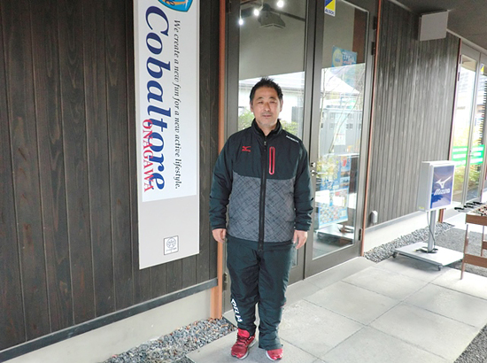
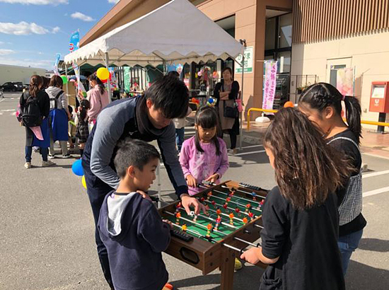

被災地のいま 宮城県・福島県の現状
「被災地のいま」 ～宮城県女川町～
第78回 2020年2月5日 ―地域とスポーツ―
サッカーで女川町の名前を全国に広めたい
宮城県女川町／コバルトーレ女川
コバルトーレ女川は、現在、東北社会人サッカーリーグ１部で戦っているサッカーチームです。2006年、スポーツを中心にまちを活性化しようという「女川スポーツコミュニティ構想」のもと、アマチュアのクラブチームとして発足し、数々の試合で地元を元気づけてきました。また、子どもサッカー教室の開催などを通じて地元の人々とのきずなを深めてきました。チームのコンセプトは“地域貢献”です。
チームの活動は2011年のリーグ開幕直前に発生した東日本大震災で、休止を余儀なくされました。阿部裕二監督は「チームの本質は何か、自分たちを見つめ直した」と当時を振り返ります。そして「できることをやろう」と様々な支援活動に取り組みます。5月には子どもたちと一緒にサッカーを始めました。「グランドに通える子たちを集めて、教えるというよりもただ遊んでいました」。また放課後、スクールバスを待つ子どもたちと校庭でボールを蹴って遊ぶこともありました。
9月にはトップチームの選手が練習を再開し、2012年4月、再びリーグ戦のピッチに立ちました。2018年には念願のJFL（※）昇格を果たしましたが、2019年は再びリーグ1部で戦うことになりました。
試合は遠方で開催することも多く、いつも地元の応援があるとは限りません。しかし阿部監督は「まちを歩いていれば、今週は試合があるの？この間は勝った？と声をかけてもらえる。試合会場には来られなくても応援してくれているというのをヒシヒシと感じる」と話します。
また選手は皆、みやぎ生協をはじめ女川や石巻などの地元企業で働き、就業外の時間を使ってサッカーの練習に励んでいます。「働いて収入を得てサッカーができる環境をつくってくださっている。それも応援の一つだと思っています」。/p>
阿部監督の願いは「サッカーで女川の名前を全国に広めること」です。そのためにはリーグ1部を勝ち抜いてJFLに昇格しなければなりません。2021年2月には女川町に天然芝のグランドができる予定です。「JFLに上がって女川町のグランドで試合ができれば、これまで以上に多くのサポーターが来町してくれる。ここでサッカーを観戦し、お酒を酌み交わし、美味しいものを食べてくれる。それが復興の後押しにもなると思っています」。
※JFL／日本フットボールリーグ。アマチュアリーグ最上位に位置する組織。

▲シーパルピア女川にあるオフィシャルショップ「コバルトーレ女川サポーターズパーク」の前で阿部監督。「震災直後、サッカー教室で教えたことのある子が、この近くでアルバイトしていたり、スーパーなどで会うと挨拶してくれたりするんですよ」と話します。

▲幼稚園・保育所、小学校でのサッカー教室を行なっている他、地域イベントにも積極的に参加しています。11月には選手たちがみやぎ生協石巻渡波店の秋まつりでボール遊びやテーブルサッカーゲームをして子どもたちとふれあいました。（写真提供：コバルトーレ女川）
2019年3月21日、みやぎ生協はコープふくしま・福島県南生協と組織合同しました。このコーナーのタイトルも「被災地のいま みやぎ生協・コープふくしまから宮城・福島のいまをお伝えします」に変え、福島県の現状についてもお伝えしていきます。
前の記事
第77回「被災地のいま ～宮城県石巻市～」（2020年1月5日）